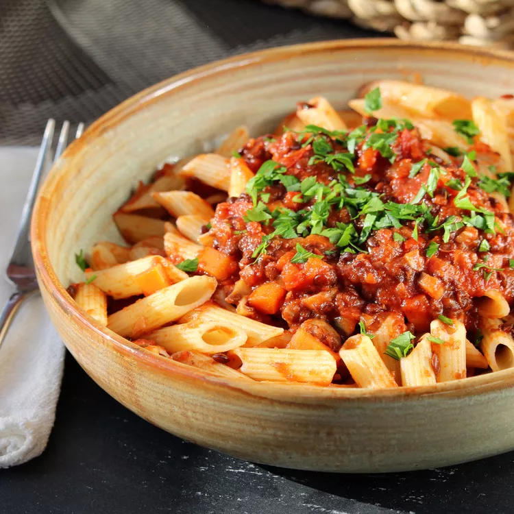

Bolognese

This is the beautiful Bolognese that you can create with this great recipe!
A tasty vegetarian Bolognese for your pasta, one of the main ingredients used is Lentil.
Ingredients
- 1 tablespoon olive oil
- 1 onion
- 2 cloves garlic
- 1/2 red bell pepper
- 1 carrot
- 1/2 cup mushrooms
- 1/2 cup red wine
- 14 ounce can diced tomatoes
- 1 cup vegetable broth
- 15 ounce can green lentils
- 1 teaspoon ground paprika
- 1 teaspoon dried basil
- 1 teaspoon dried oregano
- 1 teaspoon mixed dried herbs
- 1 pinch ground nutmeg
Steps
- Heat olive oil in a large pot over medium heat. Cook and stir onion and garlic until soft, about 5 minutes. Stir in red bell pepper and carrot; cook for 4 to 5 minutes. Add mushrooms; cook and stir until softened, about 2 minutes.
- Pour wine into the pot; simmer until slightly reduced, about 1 minute. Stir in diced tomatoes and vegetable broth. Bring sauce to a boil; reduce heat and simmer until flavors combine, 10 to 15 minutes. Stir in lentils, paprika, basil, oregano, dried herbs, and nutmeg; cook until lentils are heated through, about 5 minutes.